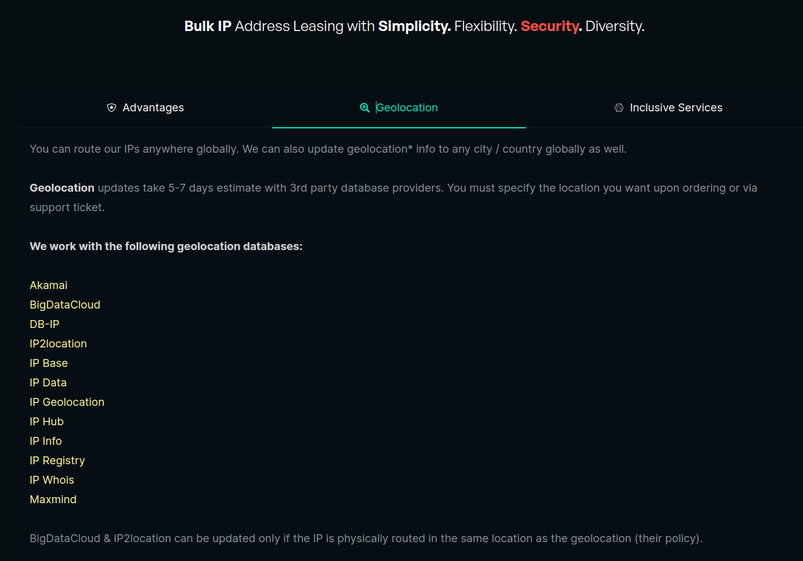
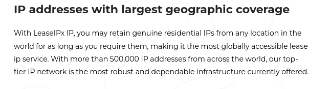
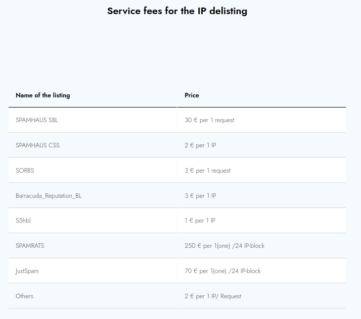
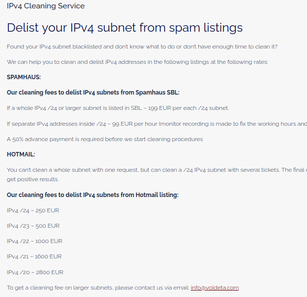
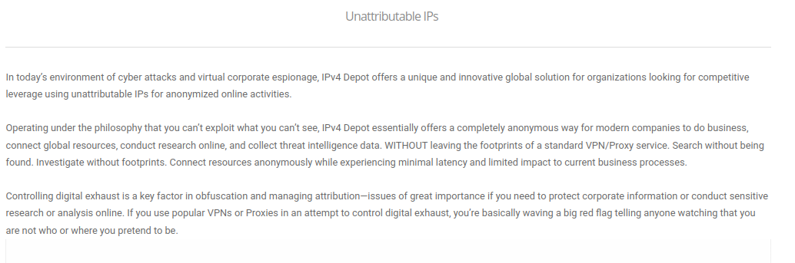
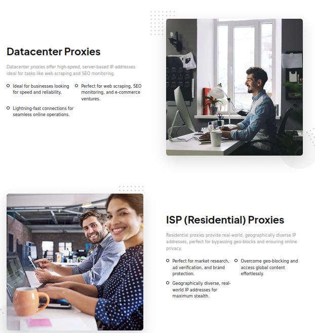
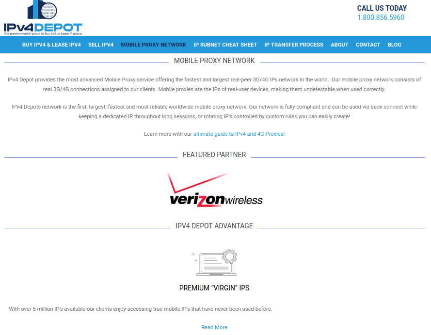

The Shady World of IP Leasing
2026-03-03The IPv4 "exhaustion" is not real. The addresses got hoarded and the market devolved into a wild sub-leasing economy where anyone can choose where their IPs appear from, who owns them on paper, and scrub them clean of any history.
IPv4 "Exhaustion" is a Myth
You've heard it a thousand times: we've run out of IPv4 addresses. ARIN, RIPE, APNIC — every Regional Internet Registry (RIR) will tell you their free pool is depleted. And technically, that's true. The RIRs have no more fresh allocations to hand out. But the addresses didn't disappear. They got hoarded.
What actually happened is that IPv4 space became digital real estate. Companies, speculators, and holding entities scooped up massive blocks — some dating back to the earliest days of the internet when /8 allocations were handed out like candy — and now they sit on them, sub-leasing ranges to anyone willing to pay. The "exhaustion" isn't a technical crisis. It's a landlord problem. The addresses exist. They're just behind a paywall now, controlled by middlemen who've turned a public resource into a rental market.
What is IP Leasing?
Normally, if you need IP address space, you go to a Regional Internet Registry. There's a process. You justify your need, you provide documentation, your organization is tied to the allocation through WHOIS records, and there are policies governing how those addresses are used. The RIR system was built around accountability — every block is traceable to a responsible party.
IP leasing is the alternative that skips all of that.
IP leasing companies bypass all of that. You don't need to justify anything. You don't need to be a network operator. You pay, you get addresses, and depending on the provider, you can white-label them so your name never appears in any public record. Some of these companies will even register an ASN on your behalf under any RIR you want — you can be sitting in the United States and walk away with a RIPE (EU RIR) ASN that is geolocated to Africa. There's nothing stopping you. You get a fully functional routing identity without ever having to interact with an RIR directly or prove you operate a legitimate network. The accountability chain that the RIR system was built on — the entire reason we have WHOIS, IRR databases, and routing policy — gets severed the moment these addresses enter the leasing market. What you're left with is anonymous, untraceable address space that can be geolocated anywhere, cleaned of any spam history, and rotated on demand, announced by an ASN that exists on paper but answers to nobody.
And the services built on top of this leasing infrastructure should raise serious red flags. We're talking about paying to get IPs delisted from spam blacklists, choosing arbitrary geolocations with no validation, buying "unattributable" white-labeled address space, and renting residential IPs that make traffic look like it's coming from someone's house. These aren't niche services. They are the backbone of how major VPN and proxy providers operate, and they are actively undermining the trust infrastructure the internet depends on.
The uncomfortable truth is that none of this is strictly illegal. The IP leasing market exists in a gray area — much like the residential proxy industry it feeds into. There are no laws against leasing IP addresses, no regulations against choosing a geolocation for your block, no prohibition on white-labeling address space. The companies doing this have terms of service and acceptable use policies, but enforcement is thin and the incentives point the wrong direction. It's muddy water all the way down. The infrastructure isn't criminal, but what it enables often is, and the line between "legitimate IP brokerage" and "anonymization-as-a-service for abuse" gets blurrier every year.
Behold! The Man Behind the Curtain
After digging into this space, here are some of the more notable IP leasing providers I found. These are the companies supplying the address space, the geolocation tricks, and the reputation laundering that make the rest of this ecosystem possible.
LogicWeb offers bulk IP address leasing bundled with web hosting and domain registration. They supply addresses to VPN providers like NordVPN, ExpressVPN, CyberGhost, and Private Internet Access (PIA). Their leasing portal lets customers pick geolocation for their IP blocks, meaning the addresses can be made to appear as if they originate from wherever the buyer wants.
IPXO runs one of the larger IP address management and leasing platforms, with a pool of over 3 million IPv4 addresses. VPN providers like ExpressVPN and ZenMate tap into their inventory. Their automated reputation management system actively maintains the "cleanliness" of leased IPs, ensuring they don't end up on blacklists — which is a polished way of saying they launder IP reputation as a service.
INIZ provides dedicated IP leasing marketed toward VPN and "secure browsing" use cases. Their client list includes HideMyAss (HMA), PureVPN, and SaferVPN. The IPs are used to build out anonymous connection infrastructure with misrepresented geolocation — the kind of setup that makes it trivial to circumvent regional content restrictions and access controls.
IPFoxi straddles both sides of the market — they lease IP address space and simultaneously sell high-speed datacenter and ISP proxies built for web scraping and bypassing geo-restrictions. Their customers include VeePN, WLVPN, GeoEdge, ProtonVPN, NordVPN, and SpiderVPN. The fact that they offer IP leasing and proxy infrastructure on the same platform makes the pipeline from "rented address space" to "anonymized abuse tool" about as explicit as it gets.
Heficed operates an IP marketplace for monetizing and leasing both IPv4 and IPv6 address space. They service a long list of VPN providers including PureVPN, Windscribe, IPVanish, StrongVPN, Witopia, Avast, and LE VPN. Like IPFoxi, they also offer datacenter proxy infrastructure alongside their leasing business, providing the full stack needed to route traffic through anonymous, geolocated address space.
These two providers run IP marketplaces for monetizing and leasing IPv4 and IPv6 blocks. Their customer base leans toward the residential proxy side — BrightData and Oxylabs, two of the largest residential proxy networks in existence, source address space from these platforms. That means the "residential" IPs those proxy networks sell to their own customers may have been leased from a marketplace and re-labeled, rather than coming from actual ISP allocations.
These are just some of the more well-known providers. There are many others operating in this space, and new ones pop up regularly. The market is large and growing.
Why This Matters
This isn't about streaming providers losing a few subscriptions. The real problem is what this infrastructure enables and what it erodes:
- IP reputation is meaningless — When you can pay to delist an IP from every major spam blacklist, those blacklists stop being useful. Security teams, mail servers, and abuse desks all depend on IP reputation data. If anyone with a credit card can launder a dirty IP range, the entire system is compromised.
- Geolocation data can't be trusted — These companies let you assign any country you want to a leased IP block with zero validation. Every geolocation database, every fraud detection system, every compliance tool that relies on IP-to-location mapping is working with poisoned data.
- Residential IPs as cover — Leasing IP space marked as "residential" means malicious traffic gets routed through address ranges that look like ordinary home connections. Real people's ISP ranges get associated with abuse they had nothing to do with. It also makes it significantly harder to distinguish bot traffic from real users.
- Unattributable address space — White-labeled, anonymous IP blocks with no public WHOIS trail create a perfect environment for fraud, credential stuffing, scraping, and other abuse with zero accountability.
- The pipeline is explicit — Some of these companies sell IP leases and proxy subscriptions on the same platform. They aren't hiding the use case. The entire business model is built around obfuscation.
The Geolocation Problem
IP geolocation is not simple. There's no single authoritative source that says "this IP is in Germany." Geolocation providers like MaxMind and IP2Location build confidence scores from multiple vectors — latency measurements, traceroute data, reverse DNS hostnames, BGP routing tables, user-submitted corrections, WHOIS records, and increasingly, geofeeds. The final "location" you see for an IP is the output of a model weighing all of these signals together. If enough of the inputs say a given location, the confidence score tips and the databases reflect it.
When you lease IP space from these providers, you get to pick what country your addresses appear to be from. There's no verification that you or your infrastructure are actually located there. You just select a country from a dropdown (logicweb.com) and the geolocation databases get updated to reflect your choice. Every fraud detection system, every compliance tool, every geo-restriction check that relies on IP-to-country mapping is now being fed whatever fiction the lessee decided to tell. This is how VPN providers can offer exit nodes in 90+ countries without actually having hardware in most of them.
One of the key input vectors being exploited is the geofeed — a mechanism defined in RFC 8805. A geofeed is just a CSV file published by the address holder that says "this prefix is in this country, this region, this city." Geolocation providers like MaxMind, Cloudflare, and Google actively scrape these files and use them as a data source. The problem? There is essentially nothing to validate them. If you control a block of IP addresses — or lease one — you can publish a geofeed that claims those IPs are in Tokyo, São Paulo, or anywhere else you want. There's no verification against physical infrastructure, no cross-referencing with actual routing paths, nothing. You write a CSV, you host it, and the geolocation databases eat it up.
Then there's the WHOIS country field. When IP space is registered or transferred, the WHOIS record includes a country code. Geolocation providers use this as another signal. If an IP leasing company transfers a block to you and sets the country in the WHOIS record to whatever you requested, that feeds directly into the geolocation models. Between geofeeds and WHOIS manipulation, you can control two of the key inputs to the confidence score without ever physically moving a single piece of hardware. The geolocation system wasn't designed to be adversarial. It was built on the assumption that the people publishing this data are acting in good faith. That assumption is now being exploited at industrial scale.
Shady Services on the Dollar
IP leasing providers have been observed offering the ability to not only choose your own geolocation for leased IP space, but allowing concerning things, such as paying to remove an IP from popular spam lists that we depend on, offering IP space that is marked as residential, and even offering service packages to use their un-leased IP space as PROXIES.
LogicWeb's leasing portal lets you pick the geolocation for your IP block from a dropdown. No proof of physical presence, no infrastructure verification. You select a country, and the geolocation databases get updated to match. This is how VPN providers offer exit nodes in 90+ countries without hardware in most of them — and why every fraud detection system relying on IP-to-location mapping is working with poisoned data.

You can rent IP space explicitly categorized as "residential" — meaning it shows up in geolocation databases as belonging to a home ISP, not a datacenter. Traffic routed through these addresses looks indistinguishable from a regular person browsing from their house. Bot detection, fraud scoring, rate limiting — all treat residential IPs with a lighter touch because they're supposed to be real people. When you can rent that classification on demand, the distinction becomes meaningless.
Residential IPs are also nearly impossible to block safely. ISPs use CGNAT, anycast, and shared pools where a single address might serve an entire neighborhood. Blocking one residential IP risks cutting off thousands of legitimate users. Because of this, most operators don't block residential ranges at all — they focus on known VPN endpoints and datacenter space. The residential proxy industry knows this and exploits it deliberately.

Multiple IP leasing companies offer paid "cleaning" services to get your IP ranges delisted from Spamhaus, Barracuda, SORBS, and other major blacklists. How exactly does that work? Are these companies in some kind of partnership with the blacklist operators? Is it pay-to-play? Or are they automating the delisting request process that's supposed to require the actual network operator to demonstrate the abuse has been resolved? A dirty IP range gets a fresh slate for a fee, and every security tool that trusts these blacklists is now working with corrupted data.

Voldeta openly advertises an "IPv4 cleaning service" to delist your subnets from spam listings. They market it as a value-add for IP space you've purchased or leased. The result is that whoever buys or leases a block next starts with a clean reputation they didn't earn. Every mail server, every abuse desk, every security tool downstream is now making decisions based on laundered reputation data.

IPV4Depot literally markets "unattributable" IP addresses. White-labeled space where the lessee's identity doesn't appear in WHOIS or any public registry. The entire point of WHOIS is that you can look up who's responsible for an IP range — it's how abuse reports get routed, how incident responders trace attacks, how law enforcement identifies infrastructure. When you can buy address space designed to have no ownership trail, you've created a black hole in the internet's accountability system.

Some of these companies don't even try to maintain plausible deniability. IPWay sells IP leasing and proxy subscriptions on the same website. The quiet part is said out loud: you can lease IP space from them, or just buy access to their proxy network directly. It's the full pipeline — from address space acquisition to anonymized traffic routing — offered as a product catalog.

Some proxy providers are forming direct partnerships with residential ISPs to route traffic through real ISP infrastructure. This isn't datacenter IP space being labeled as residential — it's actual ISP networks being leveraged as proxy pipes. Real subscribers' network ranges are being used to funnel proxy traffic, and the ISPs are apparently willing participants. It blurs the line between "legitimate network operator" and "proxy-as-a-service" in a way that makes residential IP-based detection almost impossible.

Wrapping It Up
The IP leasing industry operates in plain sight, selling services that directly undermine the trust systems the internet was built on. Spam blacklists, geolocation databases, IP reputation scoring, WHOIS attribution — all of it becomes unreliable when anyone can rent clean, geolocated, anonymous address space on demand. These aren't obscure darknet services. They have websites, pricing pages, and sales teams.
Next time you're blocking traffic based on geolocation, trusting a spam blacklist to filter your mail, or assuming an IP's WHOIS record tells you who's actually behind it — think twice. The infrastructure described in this article exists specifically to make all of those assumptions wrong. Location can be faked. Reputation can be bought. Ownership can be hidden. The signals we've relied on for decades to make security decisions are being manipulated at industrial scale, and the companies doing it are selling the tools to do so as a product.
Understanding this infrastructure is the first step toward recognizing how much of the internet's "trust layer" is already compromised.